`%||%` <- function(x, y) if (is.null(x)) y else x
KS_CFG <- list(
# hotspot definition (keep in sync with hotspot_extraction.qmd)
pct_cutoff = 0.05,
threshold_mode = "percent",
rule_mode = "vectors",
# Sourced from R/service_config.R (2026-09-01) instead of hardcoded -- this file previously
# carried its own independent, unsynced copy (fixed 2026-08-31, see docs/pipeline_reference.md
# B7 for the full incident and why this centralization exists).
#
# loss_services controls two DIFFERENT things at once here, per extract_hotspots()'s actual
# mechanics (R/get_hotspots.R): (1) per-service direction for EVERY variable this file
# individually KS-tests (include_services, 8 total: 5 amounts + 3 ratios -- a service not listed
# in loss_services/gain_services can never be flagged as a hotspot for its OWN KS test, at all),
# and (2) membership in combos below. Both amounts and ratios are "good when low" here (a
# declining ratio = worse retention efficiency, same direction as a declining amount), so both
# belong in loss_services for correct per-service KS testing (discovered 2026-08-31 when every
# ratio row came back with n_hot=0 after an earlier fix wrongly restricted this to just the 5
# amounts) -- hence combining service_names() and ratio_names() below, not just the former.
#
# combos (deg_combo/rec_combo) is what actually defines the *combined* ES-hotspot flag
# (count_deg_combo/count_rec_combo) -- this stays restricted to the 5 real hotspot-defining
# amounts, matching hotspot_extraction.qmd's HOTS_CFG exactly and the paper's own exclusion
# rationale (amounts define hotspots, ratios don't). Widening loss_services above does NOT widen
# this -- they're independent mechanisms.
# Ratios dropped from this analysis entirely, 2026-09-02: ratios were never part of the
# hotspot definition (amounts only, per Methods' Hotspot Identification section), so
# independently KS-testing them alongside the 5 real hotspot-defining services was
# inconsistent with that decision -- same fix already applied to the "Hotspot Magnitude by
# Biome" boxplots. include_services now 5, not 8 -- 25 service-by-covariate combinations,
# not 40.
loss_services = hotspot_direction_lists(looking_for = "decline")$loss_services,
gain_services = hotspot_direction_lists(looking_for = "decline")$gain_services,
combos = list(
deg_combo = service_names(),
rec_combo = service_names()
),
include_services = service_names(),
# KS settings
vars_to_test = c(
"rast_gdpTot_1990_2020_30arcsec_2020_sum",
"GHS_POP_E2020_GLOBE_sum",
"fields_mehrabi_2017_mean",
"hdi_raster_predictions_2020_mean",
"rast_adm1_gini_disp_2020_mean"
),
sampling = "match_hot", # none | match_hot | cap_nonhot
comparison_mode = "median", # "random" (all non-hotspots) | "median" (middle 5% of change)
nonhot_cap = 100000L,
permute_n = 0, # set >0 for permutation p
compute_one_sided = TRUE,
adjust_method = "BH",
# ECDF / plotting switches
# Note: Log transformation is used for visualization (ECDFs) of highly skewed variables (GDP, Pop).
# It does NOT affect the KS test statistic (D) or p-value, as KS is rank-based (invariant to monotonic transformations).
transform_default = "auto",
transform_by_var = c(
"rast_gdpTot_1990_2020_30arcsec_2020_sum" = "log1p",
"GHS_POP_E2020_GLOBE_sum" = "log1p"
),
ecdf_top_k = 8,
ecdf_service_selection = "top_k", # top_k | all | custom
mountain_service = "Pollination",
mountain_var = "rast_gdpTot_1990_2020_30arcsec_2020_sum",
mountain_transform = "log1p",
# outputs
out_table = file.path(data_dir(), "processed", "tables", paste0("ks_results_hot_vs_non", params$output_suffix, ".csv")), # Ensure this writes to the 'tables' subdirectory
out_dir = out_plots(paste0("ks", params$output_suffix)),
service_suffix_pattern = "_(mean|sum)$"
)Relative Socioeconomic Shift
v1.3.4
Overview
This notebook performs two-sample Kolmogorov-Smirnov (KS) tests to determine if the socioeconomic profiles of ecosystem service “hotspots” are statistically different from the background landscape.
Balanced Sampling Methodology
A direct comparison of hotspots (the top/bottom 5% of pixels) against the entire non-hotspot background (the remaining 95%) suffers from severe sample size imbalance and includes pixels undergoing extreme changes in the opposite direction. To ensure a fair and stable statistical comparison, this pipeline implements a “median background” sampling strategy (comparison_mode = "median"):
- Hotspots are compared strictly against the “business-as-usual” median 5% of the landscape (the 47.5th to 52.5th percentiles of change).
- This isolates the specific socioeconomic profile of extreme decline against typical, stable baseline conditions, providing a much cleaner signal for interpretation.
Workflow
Aggregation Method (Sum vs. Mean) and KS Tests
The socioeconomic variables used in this analysis are a mix of extensive totals (e.g., GHS_POP_E2020_GLOBE_sum) and intensive means (e.g., hdi_raster_predictions_2020_mean). This choice is deliberate: population and GDP are correctly summed, while indices like HDI or Gini are averaged.
Crucially, for the KS test, this distinction has no impact on the results. * The KS test is non-parametric and rank-based; it is invariant to monotonic transformations. * Because we use an equal-area grid, the sum and mean for any given variable are perfectly proportional (sum = mean * constant_area). * Therefore, the D-statistic and p-value will be identical whether the test is run on the _sum or _mean version of a variable. The choice only affects the interpretation of the descriptive statistics (e.g., mean_hot, median_hot).
Uses the hotspot definition from the extraction report to compare hotspots vs non-hotspots across socio-environmental covariates. Workflow: load helpers and cached plt_long, derive hotspot/complement subsets with the same thresholds, run KS tests per service × variable, and export heatmaps/bars/ECDFs to outputs/plots/ks/ (mirrored in outputs/plots/latest/ks/). The goal is a quick, reproducible readout of which covariates most strongly distinguish hotspot cells.
Interpreting the KS Results
Note
How to read the KS analysis outputs
- The Kolmogorov-Smirnov (KS) test compares the distribution of each covariate (e.g., population, built area, GDP, HDI) between hotspot and non-hotspot grid cells, for each ecosystem service.
- The KS statistic (\(D\)) measures the maximum difference between the two distributions. Higher \(D\) means a stronger distinction.
- The p-value indicates whether the difference is statistically significant (after adjustment for multiple testing).
- The heatmap and barplots show which variables and services most strongly distinguish hotspots.
Key Findings
- Strongest discriminators: Variables like built area (GHS_BUILT_S_E2020_mean), population (GHS_POP_E2020_GLOBE_sum, GlobPOP_Count_30arc_2020_sum), and GDP (rast_gdpTot_1990_2020_30arcsec_2020_sum) consistently show high KS statistics across several services, indicating that hotspots are associated with distinct socio-environmental profiles.
- Service patterns: Services such as C_Risk, C_Risk_Red_Ratio, and Nature_Access tend to have higher \(D\) values for built area and population, suggesting these hotspots are more urbanized or densely populated.
- Significance: Most top results have extremely low p-values, confirming that the observed differences are robust and unlikely due to chance.
- Directionality: The mean and median values for hotspots vs non-hotspots (see CSV) help interpret whether hotspots are higher or lower in each covariate. For example, if mean_hot > mean_non for population, hotspots are more populated.
How to use these results
- Targeting interventions: Focus on covariates and services with the highest \(D\) and lowest p-values—these are the most distinctive and may guide prioritization.
- External validation: The full KS results table (CSV) and plots can be shared for review, and the underlying data (plt_long) is available for reproducibility and further analysis in R, Python, or other tools.
- Limitations: KS tests are sensitive to distribution shape, not just mean differences. Always consider the context and possible confounders.
Data Dictionary for KS Results
| Column | Meaning |
|---|---|
service |
Ecosystem service being analyzed. |
var |
Socioeconomic variable being tested (e.g., GDP, Population). |
D |
The Kolmogorov–Smirnov D statistic, representing the maximum absolute difference between the empirical cumulative distribution functions (ECDFs) of the hotspot and non-hotspot groups. It is a non-parametric measure of the distance between the two distributions, with larger values indicating a greater difference. |
p_value |
Two-sided KS p-value. Small values (e.g., < 0.05) indicate the two distributions are significantly different. |
p_perm |
Optional permutation p-value (from label shuffling). NA if permutations were not run. |
n_hot |
Number of grid cells in the hotspot group. |
n_non |
Number of grid cells in the non-hotspot (comparison) group. |
mean_hot, mean_non |
Mean of the variable in the hotspot and non-hotspot groups. |
median_hot, median_non |
Median of the variable in the hotspot and non-hotspot groups. |
q10_hot, q90_hot |
10th and 90th percentiles of the variable in the hotspot group. |
q10_non, q90_non |
10th and 90th percentiles of the variable in the non-hotspot group. |
median_delta |
median_hot − median_non. The direction of the shift in the median. |
mean_delta |
mean_hot − mean_non. The direction of the shift in the mean. |
auc |
Area Under the Curve (AUC) of the ROC curve. Represents the probability that a randomly chosen observation from the hotspot group is greater than one from the non-hotspot group. A value of 0.5 indicates identical distributions. |
cliffs_delta |
A non-parametric effect size (2*auc - 1) that quantifies the magnitude and direction of the difference. Ranges from -1 (all hotspot values are smaller) to +1 (all hotspot values are larger). A value of 0 means the distributions are perfectly overlapping. Rule-of-thumb for magnitude: |d| < 0.147 (negligible), |d| < 0.33 (small), |d| < 0.474 (medium), |d| ≥ 0.474 (large). |
p_hot_greater |
One-sided KS p-value testing if the hotspot distribution is stochastically greater than the non-hotspot one. |
p_hot_less |
One-sided KS p-value testing if the hotspot distribution is stochastically smaller than the non-hotspot one. |
p_adj |
Benjamini–Hochberg FDR-adjusted version of p_value (corrected for multiple comparisons). |
p_hot_greater_adj |
FDR-adjusted version of p_hot_greater. |
p_hot_less_adj |
FDR-adjusted version of p_hot_less. |
Note
Exporting KS results for review and further interpretation
The full KS results are saved as a CSV in the processed data directory (typically /home/jeronimo/data/global_ncp/processed/ks_results_hot_vs_non.csv). You can share this file for external review, meta-analysis, or further interpretation in any statistical software.
For R users:
ks_res <- read.csv(file.path("data", "processed", "tables", "ks_results_hot_vs_non.csv"))For Python users:
import pandas as pd # Note: You may need to define the path manually if not running in an R-integrated environment processed_data_dir = "/home/jeronimo/data/global_ncp/processed" ks_res = pd.read_csv(f'{processed_data_dir}/tables/ks_results_hot_vs_non.csv')
Setup
Uses the same wiring as the hotspot extraction report: load project helpers, set a stable root, and keep output paths under outputs/.
Config
Central switches to adjust thresholds, services, variables, sampling, and output locations. This mirrors the hotspot extraction config (loss/gain/combos) so KS uses the same hotspot definition.
Pivot to long (cached)
Build plt_long from the processed grid, harmonizing service labels and keeping the socio variables we test. Cached so future renders skip the heavy pivot.
Derive hotspots (hotspot vs complement)
Apply the hotspot definition to plt_long to get hotspots_df and non_hotspots_df. This uses the same loss/gain vectors and cutoff as the hotspot extraction report.
KS tests: hotspots vs non-hotspots
Run KS per service × variable, with optional downsampling of the non-hotspot pool. Results are written to outputs/tables/ks_results_hot_vs_non.csv.
dir.create(dirname(KS_CFG$out_table), recursive = TRUE, showWarnings = FALSE)
ks_res <- run_ks_hot_vs_non(
hotspots_df = hotspots_df,
inverse_df = inverse_df,
vars = KS_CFG$vars_to_test,
include_services = svc_keep,
sampling = KS_CFG$sampling,
nonhot_cap = KS_CFG$nonhot_cap,
permute_n = KS_CFG$permute_n,
compute_one_sided= KS_CFG$compute_one_sided,
adjust_method = KS_CFG$adjust_method,
out_csv = KS_CFG$out_table
)
dplyr::glimpse(ks_res, width = 120)Rows: 25
Columns: 24
$ service <fct> N_retention, Pollination, Nature_Access, C_Prot_service, Sed_retention, Pollination, Nature_…
$ var <chr> "GHS_POP_E2020_GLOBE_sum", "GHS_POP_E2020_GLOBE_sum", "GHS_POP_E2020_GLOBE_sum", "GHS_POP_E2…
$ D <dbl> 0.55737848, 0.54703345, 0.51364958, 0.38901430, 0.30727325, 0.07134695, 0.06800935, 0.066841…
$ p_value <dbl> 0.000000e+00, 0.000000e+00, 0.000000e+00, 4.074532e-175, 0.000000e+00, 1.293372e-57, 3.76741…
$ p_perm <dbl> NA, NA, NA, NA, NA, NA, NA, NA, NA, NA, NA, NA, NA, NA, NA, NA, NA, NA, NA, NA, NA, NA, NA, …
$ n_hot <int> 68632, 68632, 67731, 2658, 52315, 64515, 57347, 54461, 33789, 1815, 2507, 62898, 66676, 6613…
$ n_non <int> 68632, 68632, 67731, 2658, 52315, 16178, 25924, 15585, 16433, 1194, 2178, 34496, 38516, 4207…
$ mean_hot <dbl> 3.655684e+04, 4.571659e+03, 2.588289e+04, 6.696747e+04, 1.492604e+04, 6.168293e+02, 5.269087…
$ mean_non <dbl> 1.425111e+03, 1.765485e+03, 3.848596e+03, 8.233033e+03, 9.288705e+02, 3.440322e+02, 4.039524…
$ median_hot <dbl> 1.790806e+03, 3.775136e+02, 1.754701e+03, 8.034534e+03, 7.201132e+01, 1.000000e+01, 9.196077…
$ median_non <dbl> 0.000000e+00, 0.000000e+00, 1.029847e-03, 2.756231e+02, 0.000000e+00, 1.000000e+01, 1.000000…
$ q10_hot <dbl> 0.000000e+00, 7.901492e-01, 7.502199e+00, 2.127244e+01, 0.000000e+00, 1.000000e+00, 1.000000…
$ q90_hot <dbl> 8.537311e+04, 8.919486e+03, 4.701112e+04, 1.537625e+05, 9.511239e+03, 3.538921e+03, 1.830214…
$ q10_non <dbl> 0.0000000, 0.0000000, 0.0000000, 0.0000000, 0.0000000, 1.0000000, 1.0000000, 1.0000000, 1.00…
$ q90_non <dbl> 5.949317e+02, 6.270249e+02, 3.909362e+03, 1.574915e+04, 5.553873e+02, 1.000000e+03, 1.000000…
$ median_delta <dbl> 1.790806e+03, 3.775136e+02, 1.754700e+03, 7.758911e+03, 7.201132e+01, 0.000000e+00, -8.03923…
$ mean_delta <dbl> 3.513173e+04, 2.806174e+03, 2.203429e+04, 5.873444e+04, 1.399717e+04, 2.727971e+02, 1.229562…
$ auc <dbl> 0.8384463, 0.8213017, 0.8118909, 0.7556731, 0.6879436, 0.5007885, 0.4710534, 0.5137245, 0.46…
$ cliffs_delta <dbl> 0.676892643, 0.642603438, 0.623781723, 0.511346130, 0.375887153, 0.001576918, -0.057893220, …
$ p_hot_greater <dbl> 1.000000e+00, 9.975406e-01, 1.000000e+00, 1.000000e+00, 1.000000e+00, 0.000000e+00, 0.000000…
$ p_hot_less <dbl> 0.000000e+00, 0.000000e+00, 0.000000e+00, 0.000000e+00, 0.000000e+00, 0.000000e+00, 0.000000…
$ p_adj <dbl> 0.000000e+00, 0.000000e+00, 0.000000e+00, 4.074532e-175, 0.000000e+00, 3.233429e-57, 1.88370…
$ p_hot_greater_adj <dbl> 1.000000e+00, 1.000000e+00, 1.000000e+00, 1.000000e+00, 1.000000e+00, 0.000000e+00, 0.000000…
$ p_hot_less_adj <dbl> 0.000000e+00, 0.000000e+00, 0.000000e+00, 0.000000e+00, 0.000000e+00, 0.000000e+00, 0.000000…Visualizations and exports
Heatmap, per-variable bars, ECDF overlays (top-K services per variable), and an optional mountain plot. Plots are saved under outputs/plots/ks/ and mirrored to outputs/plots/latest/ks/ for embedding.
KS Heatmap
This heatmap summarizes the Kolmogorov-Smirnov (KS) statistic (\(D\)) for all service-covariate pairs. The \(D\) statistic ranges from 0 to 1 and measures the maximum distance between the cumulative distribution functions of hotspots and non-hotspots. Brighter colors indicate a larger \(D\), meaning the hotspot locations are distinct from the rest of the landscape for that variable. Use this to quickly identify which socioeconomic factors are most strongly associated with hotspots of each service.
ECDF Overlays
The Empirical Cumulative Distribution Function (ECDF) plots visualize the full distribution of covariate values for hotspots (Red) versus non-hotspots (Blue). A gap between the curves indicates a difference in distribution.
Note on Transformations: We use a log1p transformation (\(\log(x+1)\)) for variables with highly skewed distributions (e.g., GDP, Population) to compress the scale and make differences in the lower range visible. Variables that are already indices (e.g., HDI, GINI) are plotted on their raw scale.
Directionality (Cliff’s Delta)
The bar plots below display Cliff’s Delta, a non-parametric effect size measure quantifying the difference between hotspot and non-hotspot distributions. Positive values (Red) indicate that the covariate is consistently higher in hotspots, while negative values (Blue) indicate it is lower. The magnitude represents the strength of the separation.
Quick looks
Top Socioeconomic Associations
This section extracts the exact statistical values for the strongest associations, providing the hard numbers behind the “Wealth Paradox” and “Urbanization of Risk” narratives.
Top 10 Strongest Socioeconomic Associations (Overall)
| Service | Variable | KS_Stat_D | Cliffs_Delta | p_adj |
|---|---|---|---|---|
| N_retention | Population | 0.557 | 0.677 | 0 |
| N_retention | GDP | 0.550 | 0.677 | 0 |
| Pollination | Population | 0.547 | 0.643 | 0 |
| Pollination | GDP | 0.534 | 0.636 | 0 |
| Nature_Access | Population | 0.514 | 0.624 | 0 |
| Nature_Access | GDP | 0.512 | 0.608 | 0 |
| C_Prot_service | GDP | 0.415 | 0.544 | 0 |
| C_Prot_service | Population | 0.389 | 0.511 | 0 |
| Sed_retention | Population | 0.307 | 0.376 | 0 |
| Sed_retention | GDP | 0.291 | 0.368 | 0 |
Top GDP Associations
| Service | Variable | KS_Stat_D | Cliffs_Delta | p_adj |
|---|---|---|---|---|
| N_retention | GDP | 0.550 | 0.677 | 0 |
| Pollination | GDP | 0.534 | 0.636 | 0 |
| Nature_Access | GDP | 0.512 | 0.608 | 0 |
| C_Prot_service | GDP | 0.415 | 0.544 | 0 |
| Sed_retention | GDP | 0.291 | 0.368 | 0 |
Top Population Associations
| Service | Variable | KS_Stat_D | Cliffs_Delta | p_adj |
|---|---|---|---|---|
| N_retention | Population | 0.557 | 0.677 | 0 |
| Pollination | Population | 0.547 | 0.643 | 0 |
| Nature_Access | Population | 0.514 | 0.624 | 0 |
| C_Prot_service | Population | 0.389 | 0.511 | 0 |
| Sed_retention | Population | 0.307 | 0.376 | 0 |
```
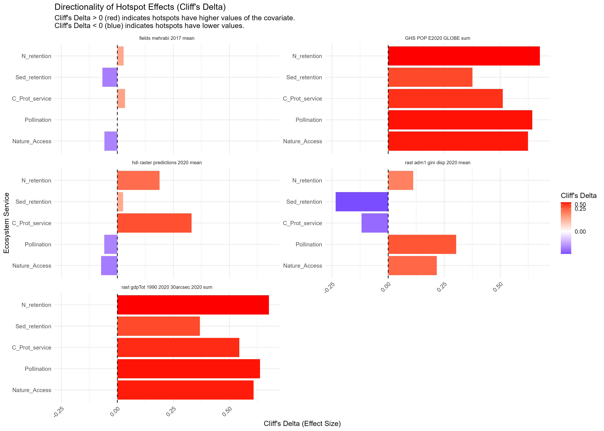
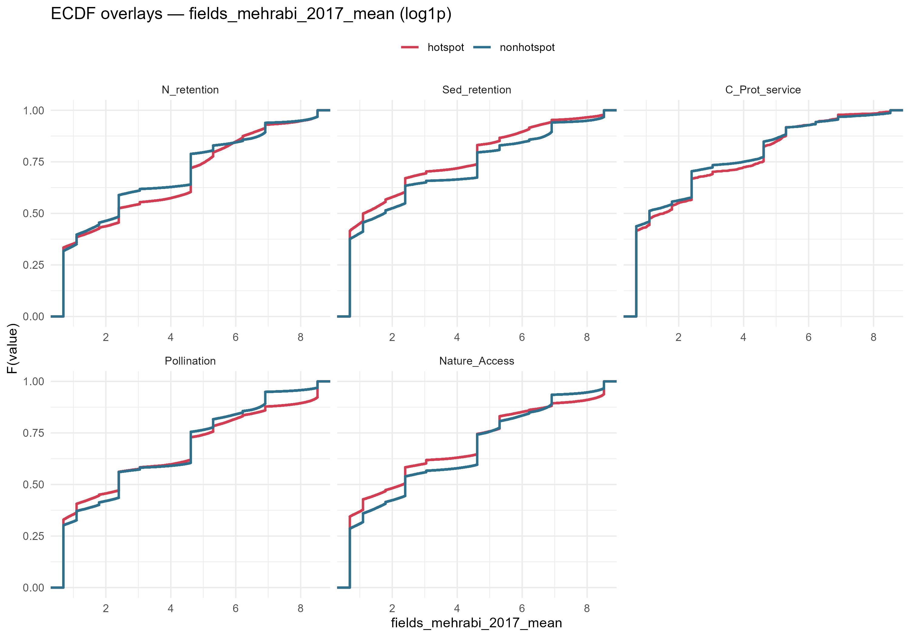
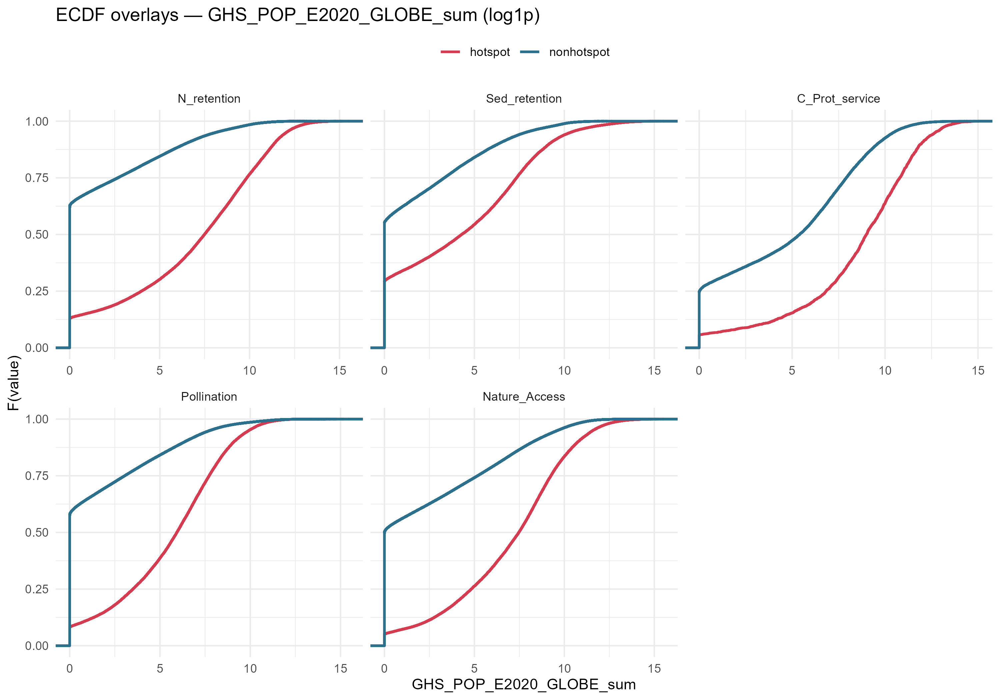
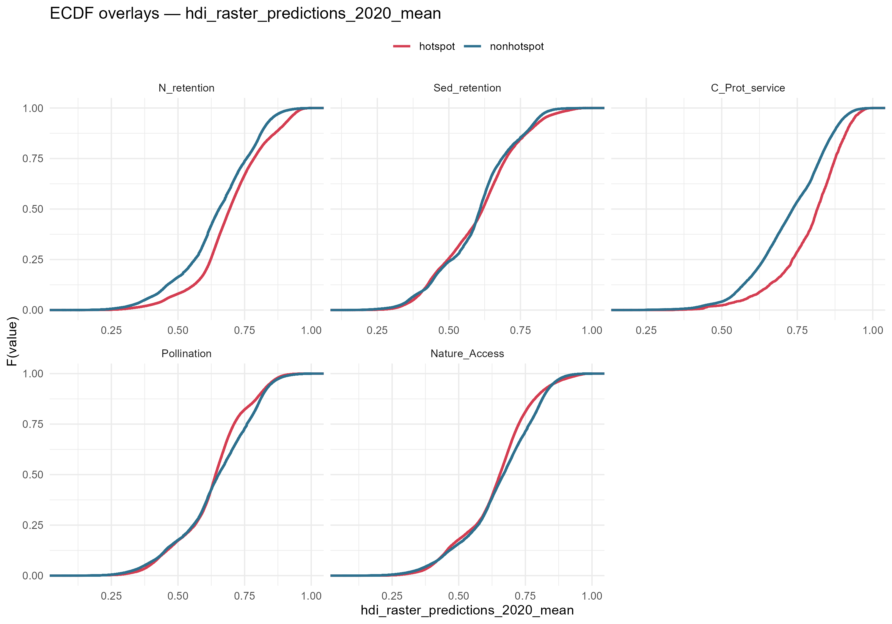
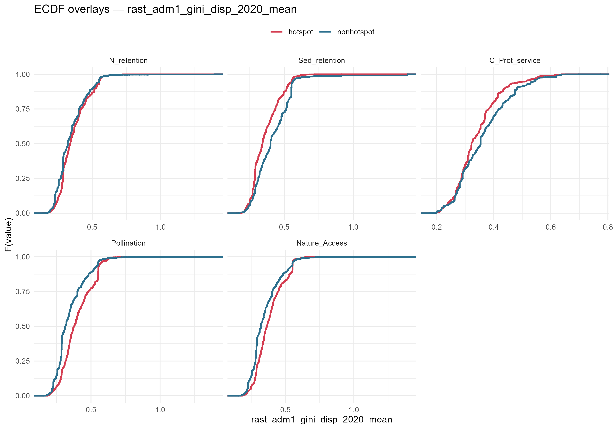
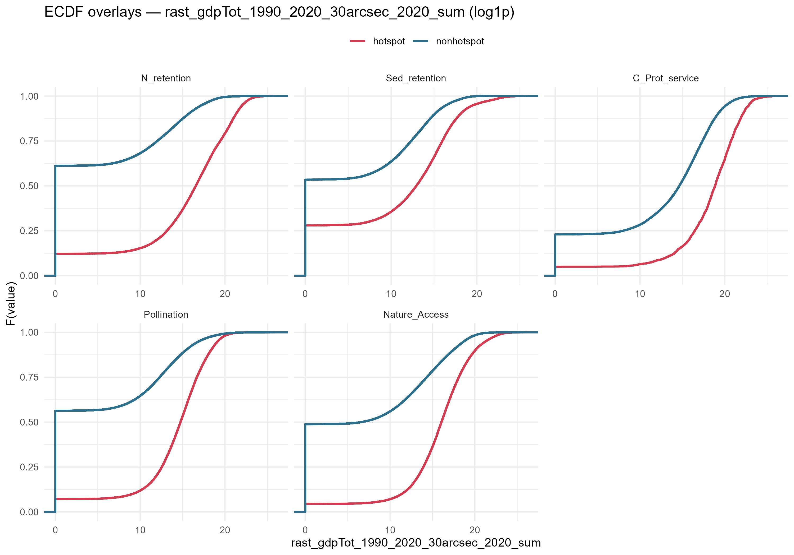
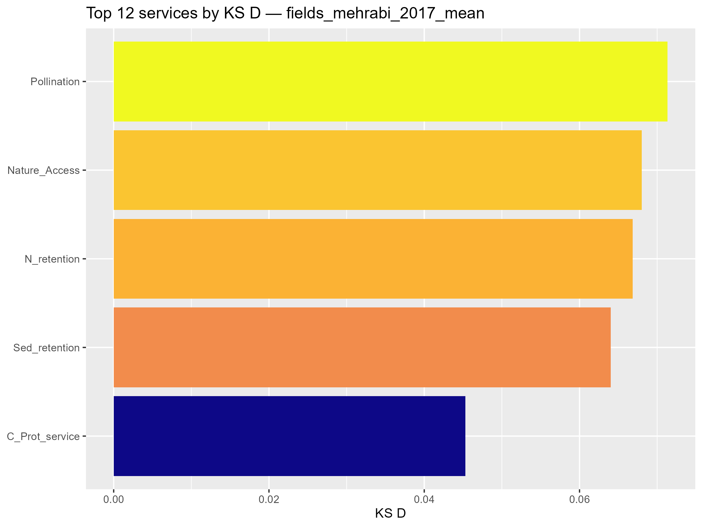
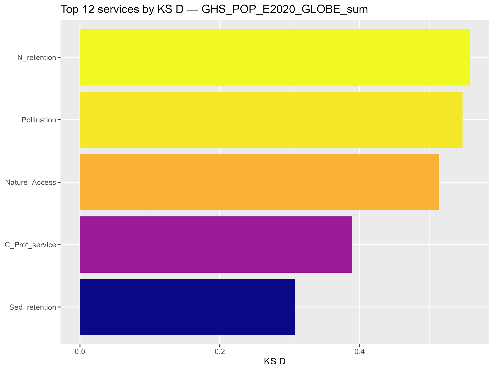
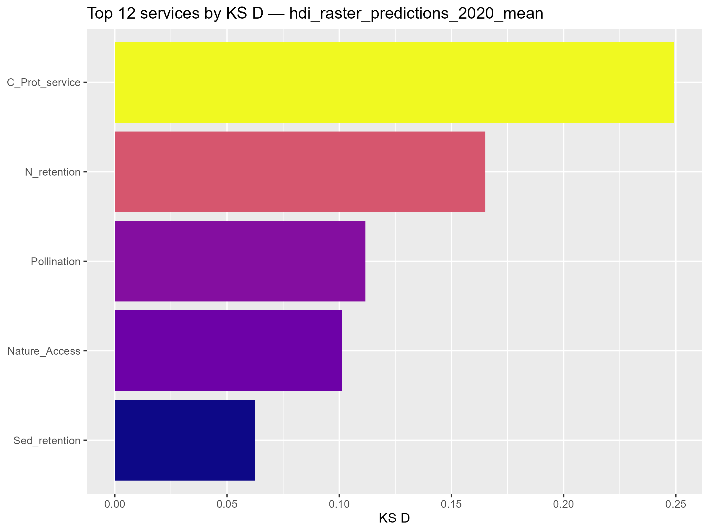
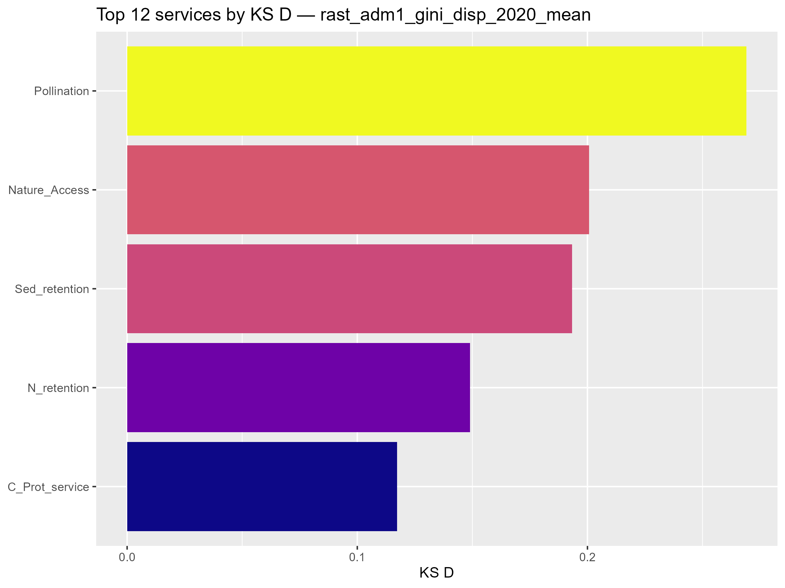
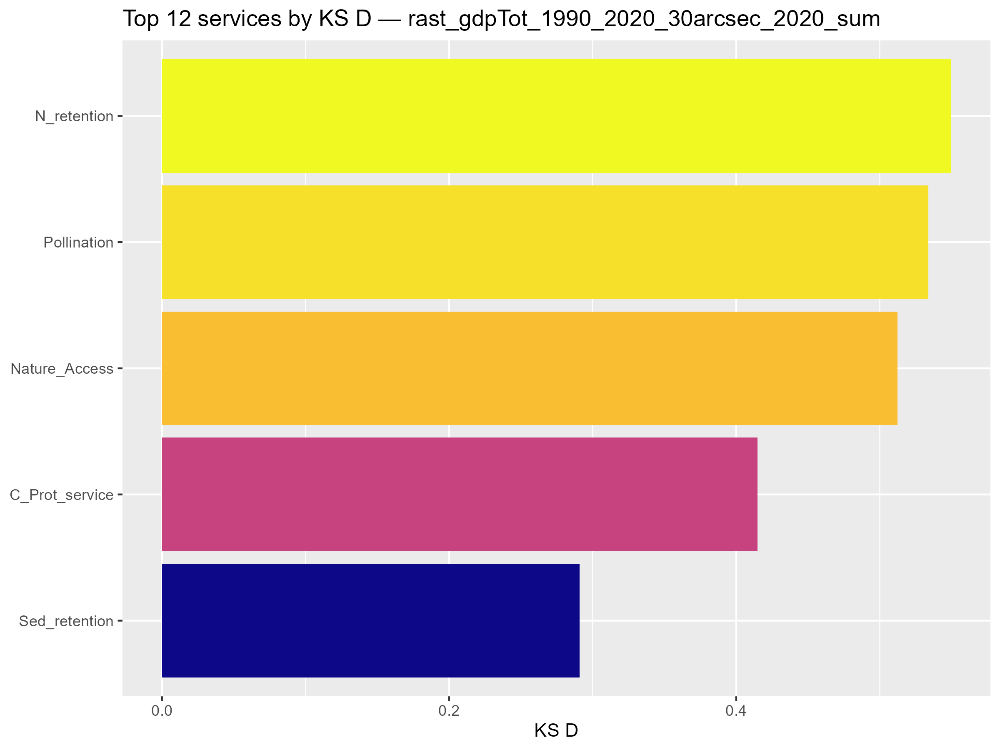
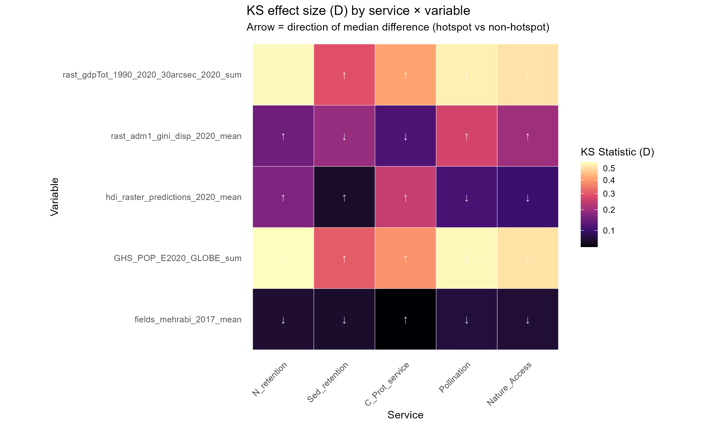